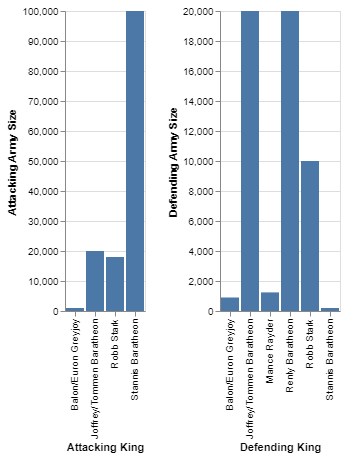

Game of Thrones being one of the most popular television shows of all time has been credited with having some of the best battle scenes ever committed to the small screen. However, the viewer isn't always made aware of the sheer size and scope of the aforementioned battles. How many people are fighting? Who are they fighting for? Who attacked who? Let's see if we can't answer these questions during the course of this investigation.
From what I can recall, having watched the show in its entirety, more often than not the attacking army was larger than the defending army. I would surmise that this was the case for most engagements as Game of Thrones was known for being surprising and shocking. Like when Daenerys' vastly larger army attacked the Lannister loot train. A dataset that details all the battles of Game of Thrones was obtained from Kaggle and was used in the generation of the visualization below.
As can clearly be discerned from the above visualizations, the attackers drastically outnumber the defenders. Though admittedly that comes as the result of one battle being a particular outlier. Ultimately there is not enough information present to make a comprehensive determination as to why the attackers usually outnumber the defenders in Game of Thrones. Nevertheless, we can ascertain that most of the combatants who take part in these large battles are Baratheon soldiers. In total, an estimated 360,756 soldiers fought for both the attacking and defending kings.
Anymore it would appear that budgets for television shows that prioritize spectacle, usually in the form of battles, increase. Some of the largest television shows to be released in recent years tend to feature large and/or spectacular battle/fight sequences. Advancements in production technologies not only make the sequences look more realistic and compelling, but also make them easier to film. Subsequently, why not film more of them if they are a proven means to improve revenue for the production.
In conclusion, there is a lot to be explored as far as battle scenes in television series are concerned. Game of Thrones is a great place to start when one considers how many it has and that it is one of the largest television shows ever produced. There is room for additional qualitative data analysis should one wish to examine the motivations of both viewers and producers.